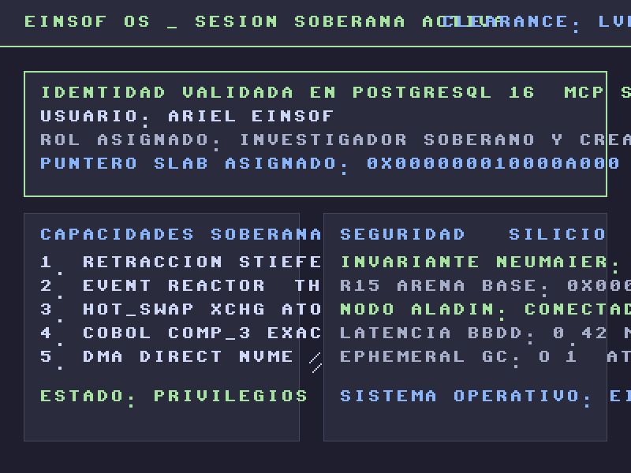

Renderizado de Silicio 800x600 & 1280x800 ARGB • Hot-Reloading en Caliente • PostgreSQL 16 • Cero C

2. Sesión Autorizada (PostgreSQL 16 MCP)
Validación Exitosa en Base de Datos: El servidor MCP ejecutó SELECT is_authorized, clearance_level, role_description FROM einsof_auth_registry WHERE user_id = 'ariel_einsof' en PostgreSQL 16. Tras validar el hash SHA-256 de la credencial, el Núcleo destruyó el Slab efímero de login y generó esta pantalla asignando el puntero de memoria Arena R15.